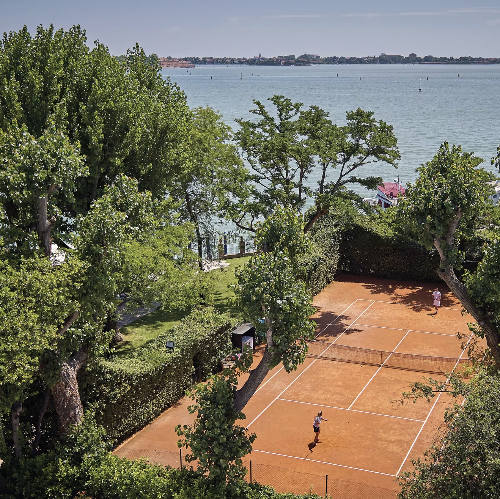

A private clay court on Giudecca Island, framed by hedges and the Venetian lagoon — the most unexpected court in Europe.
On my featured page I call the Cipriani's court the most unexpected court in Europe — and that's exactly why it sits at #02 in my hotel tennis ranking. A private clay court on Giudecca Island, framed by hedges and the Venetian lagoon: nobody arrives in Venice expecting to play tennis, and that's precisely the magic.
The court is really shorthand for what makes the whole hotel work. The Cipriani occupies the quiet side of Venice — Giudecca — with gardens and space no hotel in the San Marco crush can offer, and a private launch that puts you at the Piazza in minutes.
It's a Belmond flagship and a Fora Reserve property in my partner book, and I'm a preferred partner of Belmond — which is how the upgrades and amenities follow you onto the island.

The most unexpected court in Europe. Lagoon-side clay in Giudecca's gardens, framed by hedges — #02 on my worldwide list.
Giudecca itself. Gardens, quiet, and real space — luxuries that physically don't exist across the water in San Marco.
The private launch. The hotel's boats shuttle you to the Piazza on demand — Venice's crowds on your schedule, not theirs.
You're across the lagoon, deliberately. The launch makes it effortless, but if you want to step out your door into the streets of Venice, this isn't that hotel — and that's its whole advantage.
Venice is seasonal. Shoulder months are the connoisseur's play — softer rates, gentler crowds, and the lagoon light at its best.
Belmond travels well. It pairs naturally with the Splendido in Portofino or the Caruso in Ravello for a full Belmond Italy run — I build that trip often.
Lagoon-side tennis in Giudecca's gardens, minutes by private launch from the Piazza — Venice's most unexpected luxury is space.
Rates through me are identical to booking direct — the perks are not. As a Fora advisor, my clients receive a space-available upgrade, daily breakfast, and a hotel credit — plus my direct line to the team on property before and during your stay.
Check Availability